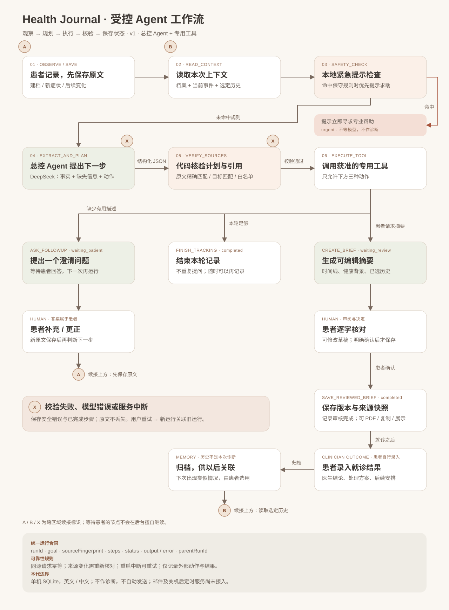

已选架构 A · 受控总控 Agent + 专用工具 · 设计版本 1.0

ask_followup
finish_tracking
create_brief
图中的 A / B / X 是跨区域续接标识，避免长回路线遮挡主流程。此图为逻辑设计合同；实现文件、测试命令和浏览器验证结果见项目的 AGENTIC-WORKFLOW.md。原始 Archify 候选与失败诊断一同保留；最终 SVG 使用显式布局，未声称通过 Archify 自动布局认证。